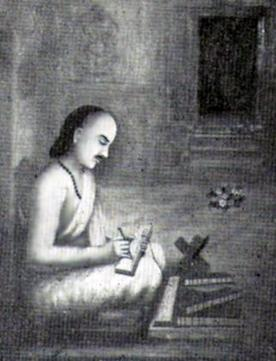
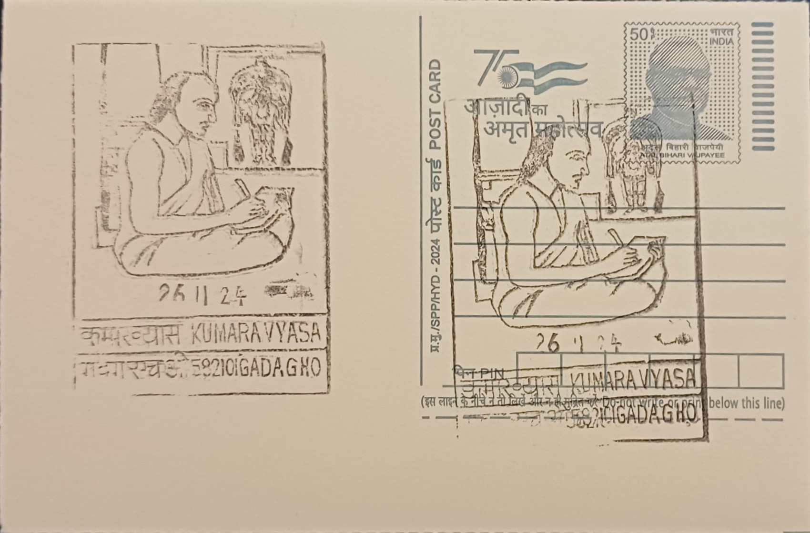

Kumaravyasa is the pen name by which the poet is remembered, a title meaning "the lesser Vyasa" or "son of Vyasa," consciously invoking Veda Vyasa, the sage traditionally credited with composing the original Sanskrit Mahabharata. His given name is recorded in tradition as Naranappa, and because of his long association with the town he is also styled Gadugina Narayanappa, the prefix marking his place of residence. Little verifiable detail survives about his family or early life, and most of what is known comes from internal references in his verse and from local legend that grew up around the Veeranarayana temple where he is said to have worked, a pattern typical of medieval Kannada poets whose biographies survive chiefly through the texts they left behind.
As a figure in Kannada literary history, Kumaravyasa occupies a position comparable to that of Pampa and Ranna among the language's classical poets, but his distinction rests specifically on having rendered the Mahabharata into accessible, performable Kannada verse for a popular rather than purely courtly audience. His Karnataka Bharata Kathamanjari, widely known as Gadugina Bharata or Kumaravyasa Bharata, covers the first ten parvas of the epic and concludes with the coronation of Yudhishthira, stopping short of the full eighteen books. Scholarship generally places its composition in the early fifteenth century, during the reign of the Vijayanagara emperor Devaraya II, with 1430 commonly cited as the approximate date of completion, making it a product of the empire's wider patronage of Kannada letters.
The poem is composed entirely in bhamini shatpadi, a six-line verse form with a distinctive rhythmic structure that Kumaravyasa handled with unusual technical control, varying its pace to suit battle scenes, dialogue, and reflective passages alike. He was a devout worshipper of Krishna, and his retelling foregrounds Krishna's role as strategist and divine presence within the Pandava cause, a devotional framing that colors the whole work. Critics have long praised his command of metaphor and simile, earning him the epithet "Rupaka Samrajya Chakravarthi," or emperor of the empire of metaphor, for the density and originality of his figurative language, a quality that set his Bharata apart from earlier Kannada epic poetry aimed more narrowly at royal courts.
Tradition closely ties the poem's composition to the Veeranarayana temple in Gadag, an eleventh-century structure built under the Kalyani Chalukyas, where a specific stone pillar is still pointed out to visitors as the spot where Kumaravyasa is believed to have sat and composed his verses; some local accounts extend this association to the temple complex at the Tungabhadra-Varada confluence near Koodali Sangama, though the Gadag temple itself remains the most firmly attested site in guidebooks and regional accounts. Beyond its literary merit, the Bharata became a vehicle of oral and performative culture, recited by professional Bharatada vachakas in villages and adapted extensively into Yakshagana theatre, through which its verses reached audiences far beyond readers of literary Kannada.
The text continues to be studied in Kannada university departments and is routinely included in critical editions and annotated commentaries published by Karnataka's literary academies, while the Veeranarayana temple itself draws visitors and scholars interested in its Chalukyan architecture alongside its association with the poet. Public recitation of the Bharata, particularly its battle cantos, remains a living tradition in parts of northern Karnataka, sustained today by folk performers and cultural organizations based around Gadag rather than existing only as a text confined to libraries.
| Date of Introduction | November 26, 2024 |
|---|---|
| Address | Senior Postmaster, |
| Gadag HO, | |
| Gadag (dt.), Karnataka - 582101. |